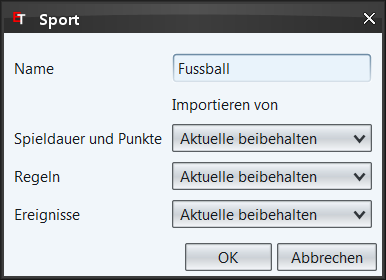

|
 |
| Neuer Sport | Sport bearbeiten |
Dieser Dialog hilft ihnen neue Sportarten zu erstellen und bestehende zu bearbeiten.
Hier erfassen sie den Namen der Sportart. Falls sie eine der Standard-Sportart bearbeiten, ist dieses Feld nicht editierbar.
Mit den DropDown-Listen können sie nun Regeln usw. von bestehenden Sportarten importieren. Falls sie "-" wählen wird die entsprechende Rubrik leer sein. Es wird z.B. eine Sportart ohne Regeln erstellt. Dies kann von Vorteil sein, wenn sie die Regeln später komplett selber festlegen möchten. Lesen sie mehr dazu in den folgenden Kapiteln.
Beim bearbeiten von bestehenden Sportarten haben sie zusätzlich die Option "Aktuelle beibehalten". Dies bedeuted, dass im entsprechenden Teil nichts an den bereits gemachten Änderungen verändert wird.